Releasenotes eBlinqx Hypotheekadvies – Mei 2025
Onderstaande updates hebben wij in de maand mei doorgevoerd:
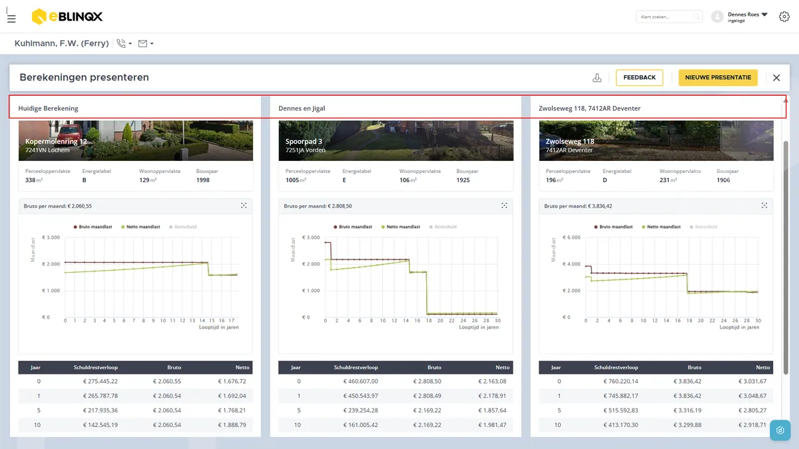
🎉 IT-26163: Titelbalk gefixeerd bij berekeningen vergelijken
Bij het vergelijken van meerdere berekeningen in Fastlane Advies blijft de titelbalk vanaf nu zichtbaar. Hierdoor behoud je overzicht op welke berekening je naar kijkt, ook als je naar beneden scrollt. Dat maakt het vergelijken van details binnen de berekeningen een stuk duidelijker en gebruiksvriendelijker.
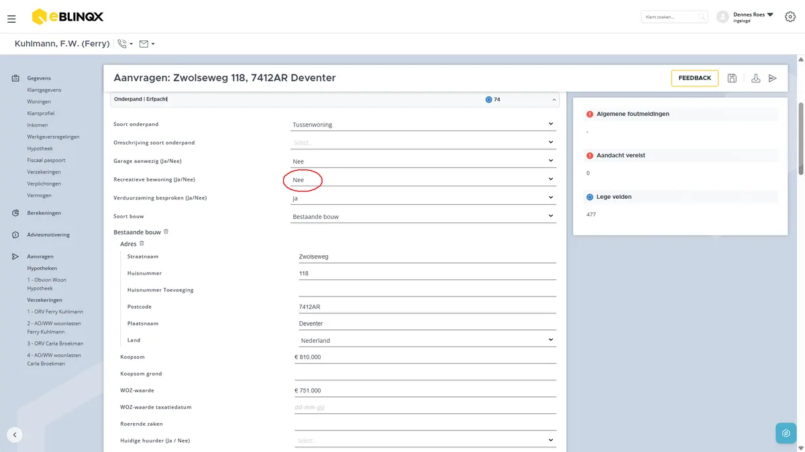
🎉 IT-26693 – Prefill veld ‘Recreatieve woning’ in HDN-aanvraagformulier
Met deze release wordt het veld ‘Recreatieve woning (Ja/Nee)’ in het onderdeel Huidig Object van de HDN-aanvraag standaard vooraf ingevuld met het antwoord: ‘Nee’.
Deze aanpassing zorgt voor een sneller en vollediger aanvraagproces en voorkomt onbedoeld lege of foutief geïnterpreteerde velden. Uiteraard blijft het mogelijk om de waarde handmatig aan te passen indien er wél sprake is van recreatieve bewoning.
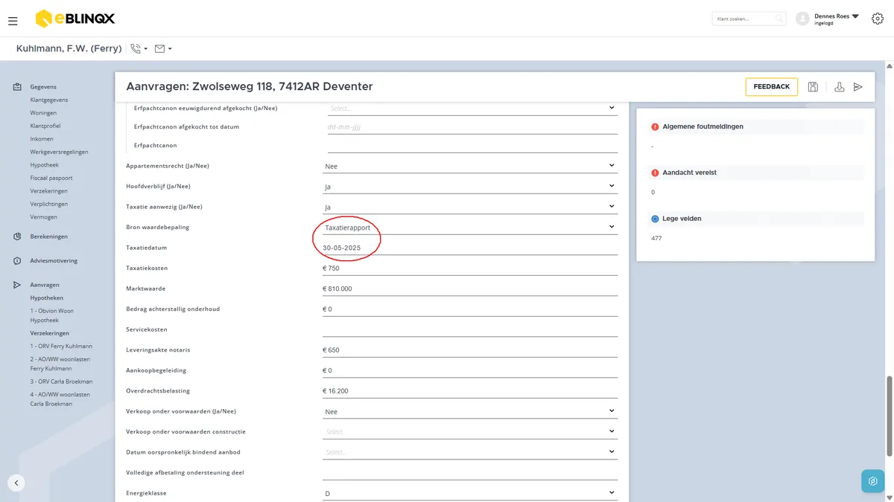
🎉 IT-26678: Prefill bron waardebepaling en taxatiedatum in HDN-aanvraag
Vanaf deze release worden de velden ‘Bron waardebepaling’ en ‘Taxatiedatum’ in het HDN-aanvraagformulier automatisch vooraf ingevuld, indien deze gegevens beschikbaar zijn.
-
Bron waardebepaling: Wordt automatisch ingevuld op basis van Taxatie
-
Taxatiedatum: Wordt automatisch gevuld indien op basis van de systeemdatum
Deze automatische voorinvulling draagt bij aan een snellere en foutloze indiening van de HDN-aanvraag en voorkomt dat deze velden handmatig vergeten worden. Uiteraard blijven beide velden handmatig aanpasbaar indien nodig.
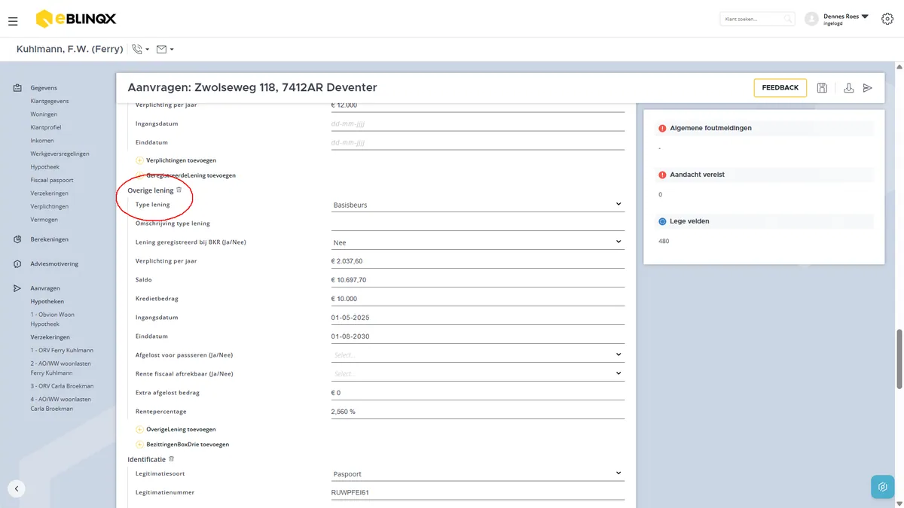
🎉 IT-26694 – Prefill velden bij Overige Lening m.b.t. aflossing
Vanaf deze release worden bij het onderdeel Overige Lening in de HDN-aanvraag twee velden standaard vooraf ingevuld om het aanvraagproces te versnellen en vergissingen te voorkomen:
-
Het veld ‘Afgelost door aangevraagde lening?’ wordt standaard ingevuld met: ‘Nee’
-
Het veld ‘Extra afgelost bedrag’ wordt standaard ingevuld met: € 0,00
Deze automatische voorinvulling zorgt voor een efficiënter aanvraagproces en voorkomt dat velden onbedoeld leeg blijven. Uiteraard blijft het mogelijk deze waarden handmatig aan te passen indien van toepassing.
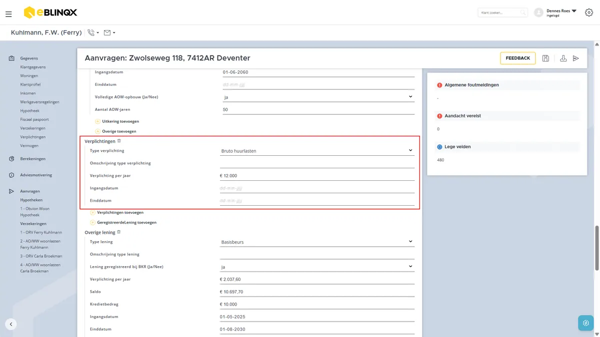
🎉 IT-26696: Bruto huurlasten als verplichting meenemen in HDN-aanvraag
Met deze release worden bruto huurlasten uit PortefeuilleSignalen correct verwerkt als verplichting in de HDN-aanvraag. De maandelijkse huurlast uit het veld ‘Je huurlasten per maand’ wordt automatisch omgerekend naar een jaarbedrag. Dit jaarbedrag wordt vervolgens opgenomen in het HDN-aanvraagformulier, onder de betreffende persoon, in de sectie: Inkomen | Huidige woonlasten | Verplichtingen | Legitimatie, bij het onderdeel ‘Verplichtingen’, met het type verplichting: ‘Bruto huurlasten’. Deze aanpassing zorgt voor een correcte en uniforme verwerking van huurverplichtingen bij aanvragen.
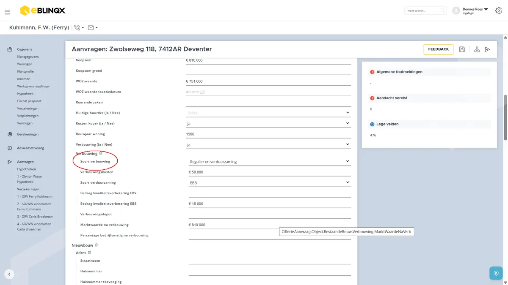
🎉 IT-26697 – Soort verbouwing automatisch afleiden uit financieringsopzet
Vanaf deze release wordt het HDN-veld 'Soort verbouwing' automatisch ingevuld op basis van de gegevens uit de financieringsopzet. Hiermee wordt het handmatig invullen van dit veld overbodig en verkleinen we de kans op fouten. Het systeem herkent nu automatisch of de klant:
-
uitsluitend een reguliere verbouwing wenst,
-
een combinatie van verbouwen en verduurzamen wil,
-
of alleen wil verduurzamen.
Deze verbetering draagt bij aan een efficiënter adviesproces en een betere aansluiting tussen de financieringsopzet en het klantprofiel.
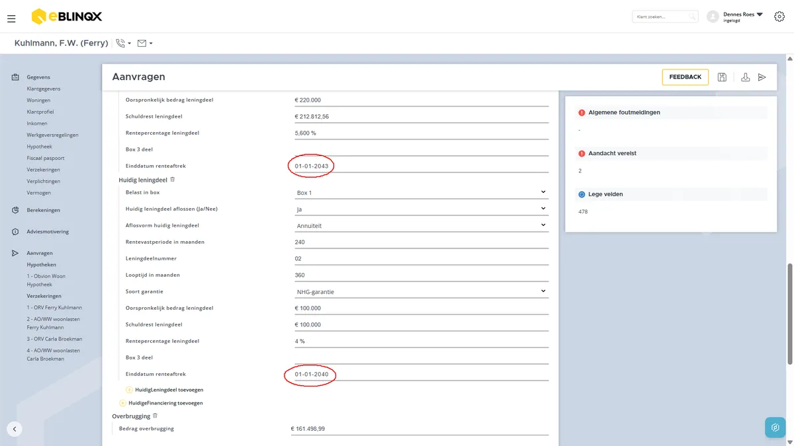
🎉 IT-26673: HDN Verbetering verwerking einddatum renteaftrek en validatiemeldingen
In deze release zijn belangrijke verbeteringen doorgevoerd in de manier waarop de einddatum van renteaftrek wordt ingevuld en hoe foutmeldingen worden weergegeven bij HDN-aanvragen.
Wat is er aangepast?
-
Box 3 leningdelen (huidige situatie):
Bij bestaande leningdelen in box 3 wordt de einddatum renteaftrek niet langer automatisch ingevuld. Dit voorkomt verwarring en onterechte validatiefouten. -
Box 1 leningdelen (aan te vragen lening):
Voor nieuwe leningdelen in box 1 wordt de einddatum renteaftrek wel automatisch ingevuld, zoals het hoort. -
Validatiemeldingen verbeterd:
HDN-foutmeldingen worden nu getoond bij het juiste invoerveld. De generieke 'Algemene foutmelding' behoort hiermee tot het verleden, zodat je sneller ziet waar actie nodig is.
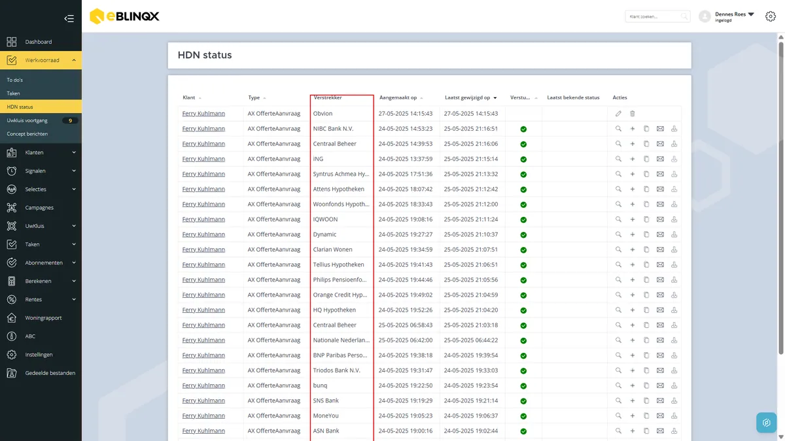
🎉 IT-26675: Weergave namen geldverstrekkerw in HDN-statusoverzicht
In het HDN-status overzicht worden de namen van geldverstrekkers nu duidelijker weergegeven. In plaats van afkortingen of codew worden - waar mogelijk - de volledige namen getoond.
Voordeel voor jou als adviseur:
✔ Meer overzicht en duidelijkheid in het HDN-statusoverzicht
✔ Geen verwarring meer door onbekende afkortingen
✔ Professionelere uitstraling richting klanten
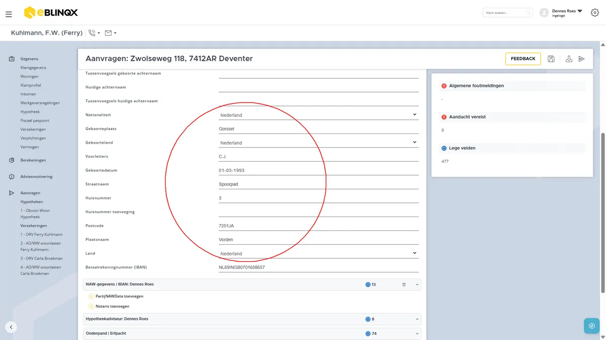
🎉 IT-26605: Gehuurde woning nu zichtbaar in eBlinqx Hypotheekadvies én HDN-formulier
Vanaf nu wordt een gehuurde woning of een situatie waarin de klant inwonend is, correct weergegeven als huidige woonsituatie in zowel eBlinqx Hypotheekadvies als het HDN-formulier.
Wat is er aangepast?
-
De woonsituaties "Huurwoning", "Inwonend bij familie", of vergelijkbare vormen worden nu:
-
zichtbaar in eBlinqx Hypotheekadvies onder "Huidige woning"
-
meegenomen in het HDN-formulier, zodat deze informatie ook correct bij de geldverstrekker aankomt
-
-
Voorheen werd dit veld niet getoond of bleef het leeg, wat kon leiden tot verwarring of onvolledige aanvragen.
Voordeel voor jou als adviseur:
✔ Completer klantbeeld in het adviesdossier
✔ Minder kans op onvolledige HDN-aanvragen
✔ Eenduidige gegevensuitwisseling tussen eBlinqx Hypotheekadvies en geldverstrekker
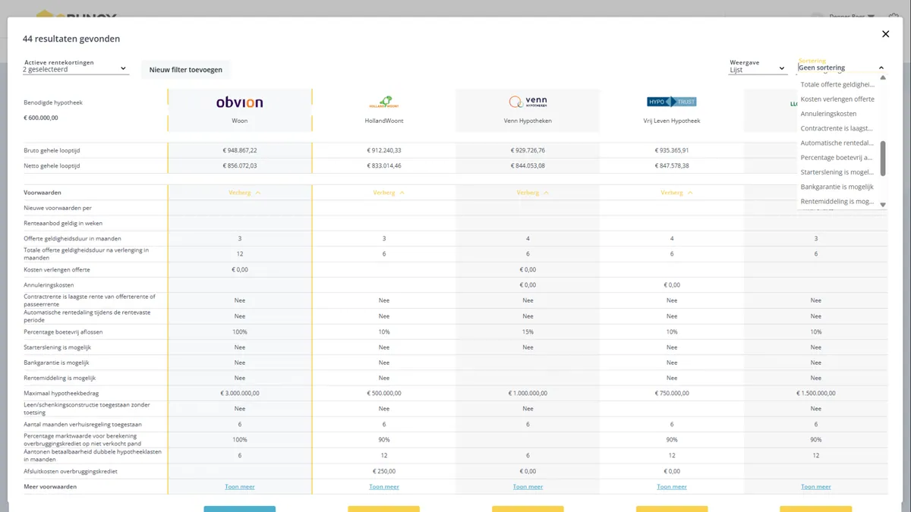
🎉 IT-26508: Sorteren op kwalitatieve voorwaarden geldverstrekkers
Vanaf nu kunnen adviseurs kwalitatieve voorwaarden van geldverstrekkers eenvoudig sorteren. Dit maakt het vergelijken van voorwaarden gebruiksvriendelijker, sneller en relevanter voor het adviesproces. We hebben een sorteerfunctionaliteit toegevoegd op een groot aantal kwalitatieve voorwaarden, zoals:
-
Offertegeldigheid (bijv. ‘Renteaanbod geldig in weken’, ‘Kosten verlengen offerte’)
-
Voorwaarden voor flexibiliteit (zoals ‘Aantal maanden verhuisregeling toegestaan’, ‘Boetevrij aflossen %’)
-
Aanvullende faciliteiten (bijv. ‘Starterslening mogelijk’, ‘Rentemiddeling mogelijk’)
Elke kolom is nu sorteerbaar, zowel in lijst- als tabelweergave. De standaard sortering is ingesteld per voorwaarde, maar kan met één klik worden omgekeerd. De gekozen sortering wordt bovendien onthouden bij export naar PDF en bij terugnavigatie vanuit het detailscherm van de geldverstrekker.
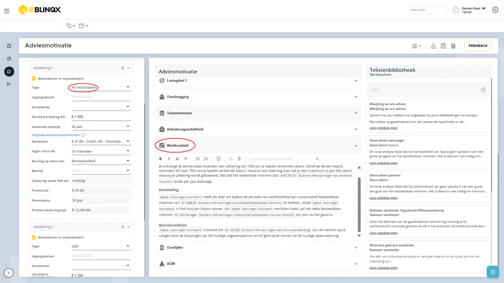
📢 Geen WW-dekking geadviseerd = Geen WW-tekst in rapport
Wanneer er tijdens het adviesproces (op basis van GHF of CBI) expliciet géén dekking voor werkloosheid wordt geadviseerd, dan wordt de bijbehorende tekst over WW-dekking voortaan niet meer automatisch opgenomen in het adviesrapport. Dit voorkomt verwarring bij de klant en zorgt voor een zuiver en consistent adviesrapport waarin alleen relevante informatie wordt opgenomen.
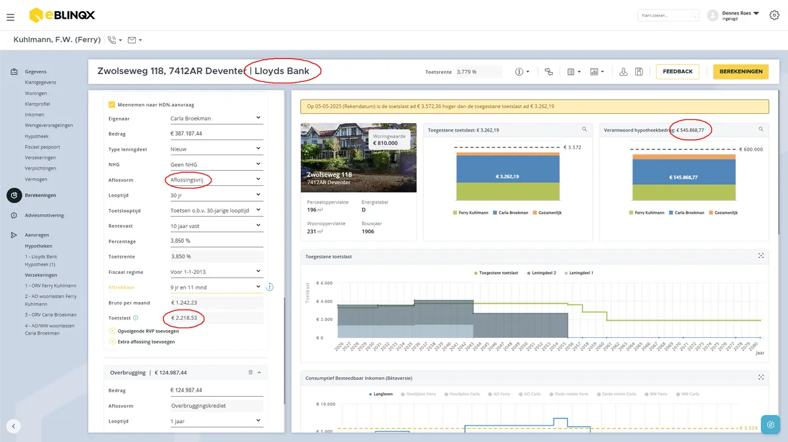
📢 Lloyds Bank: Aflossingsvrij altijd getoetst in box 3
Vanaf heden houdt eBlinqx Hypotheekadvies automatisch rekening met het beleid van Lloyds Bank ten aanzien van aflossingsvrije hypotheken. Lloyds Bank toetst een aflossingsvrij leningdeel altijd consumptief.
📌 Wat betekent dit?
-
Aflossingsvrije leningdelen worden door Lloyds Bank altijd getoetst als consumptieve financiering (box 3), ook wanneer de rente wél aftrekbaar is.
-
Toetsing vindt plaats op basis van een hypotheekrente van 5,00%, ongeacht de werkelijke rente.
-
Lloyds verstrekt nooit een hoger aflossingsvrij bedrag dan wat op basis van inkomen vanaf AOW-leeftijd verantwoord is.
eBlinqx Hypotheekadvies verwerkt deze beleidsregel automatisch in de toetsing. Zo voorkom je verrassingen in het acceptatieproces en kun je je klant proactief informeren over de toetsingsgrondslag van Lloyds.
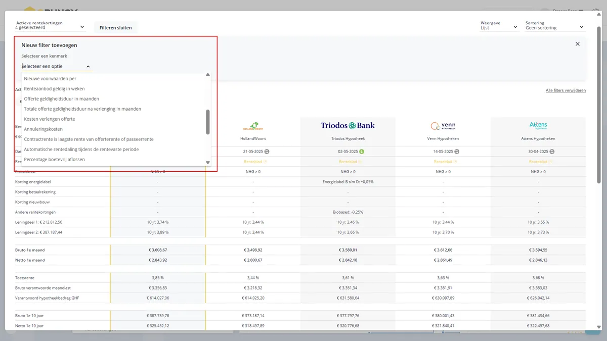
🔔 IT-26379: Voorwaarden vergelijken tussen geldverstrekkers nu beschikbaar
Vanaf nu is het in eBlinqx Hypotheekadvies mogelijk om geldverstrekkers niet alleen kwantitatief, maar ook kwalitatief op basis van voorwaarden met elkaar te vergelijken. Adviseurs kunnen eenvoudig:
-
Voorwaarden bekijken per geldverstrekker
-
Geldverstrekkers onderling vergelijken op hypotheekvoorwaarden
-
Filteren op relevante wensen van de klant
-
Sorteren op bijvoorbeeld geldigheidsduur offerte, rentemiddeling of vergoedingsvrije aflossing
Voordelen voor de adviseur:
-
Tijdswinst: snel inzicht in welke geldverstrekkers passen bij de klantwens
-
Advies op maat: betere onderbouwing richting klant en toezichthouder
-
Efficiënt vergelijken: direct vanuit eBlinqx Hypotheekadvies, zonder handmatig zoeken
Voordelen voor de klant:
-
Meer inzicht in verschillen tussen geldverstrekkers
-
Sneller duidelijkheid over passende keuzes
-
Grotere kans op een hypotheek die écht past bij de persoonlijke situatie
Deze uitbreiding zorgt voor een vollediger advies en een betere klantervaring. De functionaliteit bevindt zich in het onderdeel ‘Geldverstrekkers vergelijken’ onder ‘Hypotheek samenstellen’.
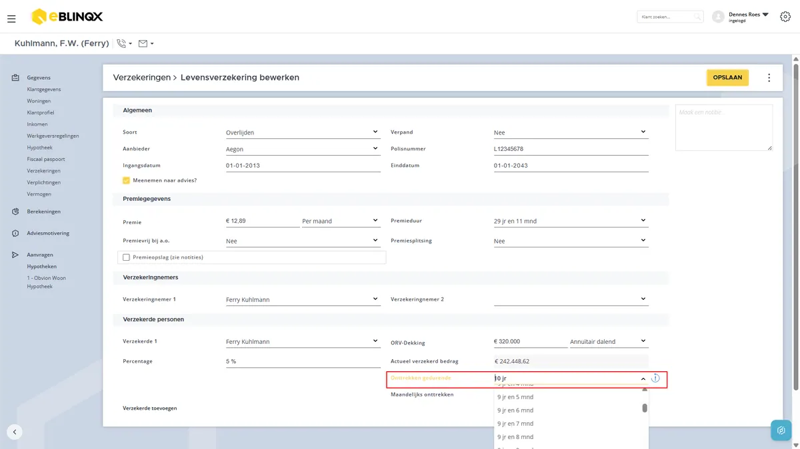
🔔 IT-24453: Zelf instelbare opnameperiode bij bestaande ORV
Het is nu mogelijk voor adviseurs om zélf de opnameperiode in te stellen bij een bestaande overlijdensrisicoverzekering (ORV) in PortefeuilleSignalen, indien ‘Verpand’ op Nee is gezet. Vanaf nu kan de adviseur bepalen over welke termijn de langstlevende het resterende verzekerde bedrag kan benutten. Hierdoor sluit de ORV-simulatie beter aan op de gewenste financiële planning na overlijden.
Voordelen voor de adviseur:
-
Meer regie over de adviesopzet bij bestaande ORV’s
-
Betere afstemming op de persoonlijke situatie van de klant
-
Realistischer invulling van de maandelijkse onttrekking uit de ORV
-
Grotere nauwkeurigheid bij het toetsen van het scenario overlijden
Deze verbetering biedt extra flexibiliteit en draagt bij aan een completer en klantgerichter advies.
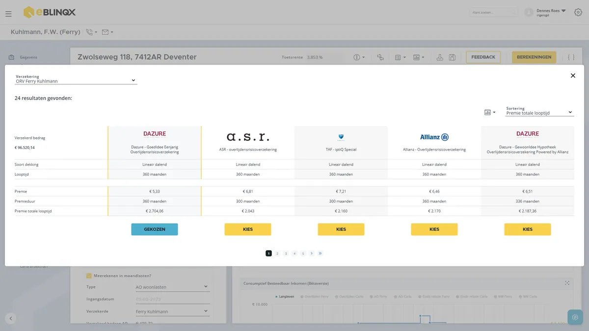
🔔 IT-22658: Releasenote – Vergelijken ORV a.s.r. nu mogelijk
Vanaf vandaag is het mogelijk om de overlijdensrisicoverzekering (ORV) van a.s.r. mee te nemen in de vergelijking in eBlinqx Hypotheekadvies en aan te vragen via HDN. Daarmee bieden we adviseurs extra keuzevrijheid bij het adviseren van passende overlijdensrisicodekkingen. De ORV van a.s.r. is vanaf nu zichtbaar in de vergelijkingstool. De premie wordt automatisch meegenomen in het overzicht en het adviesrapport.
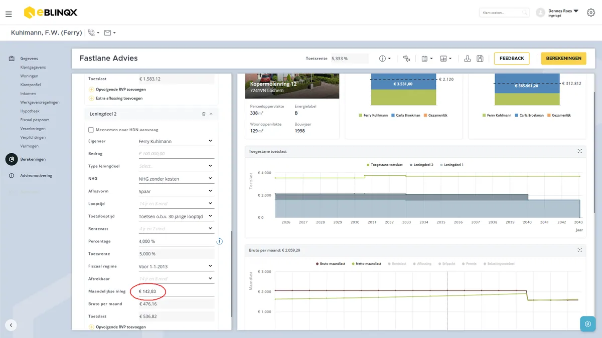
IT-26409: Automatische verwerking premies spaarhypotheken en levensverzekeringen
Met deze release worden de premies van bestaande spaarhypotheken en gekoppelde levensverzekeringen voortaan automatisch meegenomen in de eBlinqx Hypotheekadvies berekening. Dit geldt voor dossiers waarbij deze producten onderdeel uitmaken van de huidige hypotheeklasten.
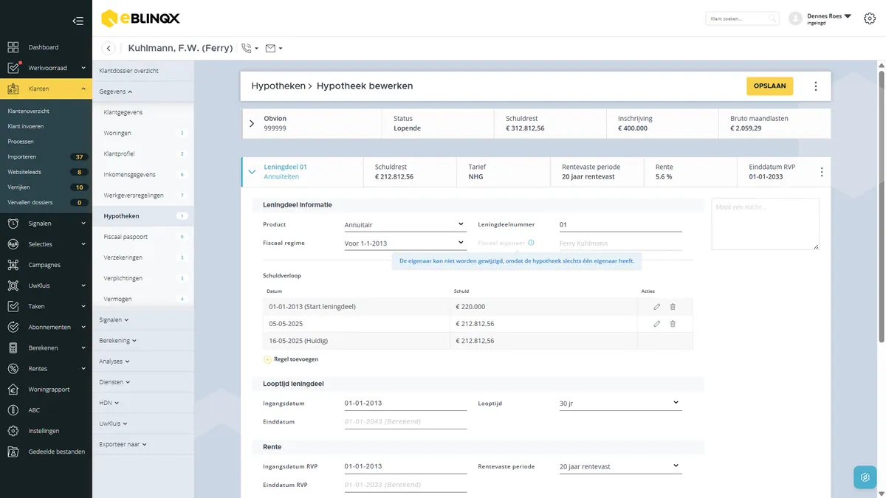
🔔 IT-26360: Tooltip-informatie-icoon toegevoegd
We hebben een visuele verbetering doorgevoerd binnen de applicatie: overal waar een tooltip beschikbaar is, wordt nu een informatie-icoon weergegeven naast het bijbehorende label. Dit maakt het voor gebruikers duidelijker dat er aanvullende informatie beschikbaar is via een mouse-over of klik. Deze aanpassing draagt bij aan een intuïtievere gebruikerservaring en zorgt ervoor dat belangrijke toelichtingen beter worden opgemerkt. Let op: de inhoud van de tooltips zelf is ongewijzigd; enkel de zichtbaarheid is verbeterd door het toevoegen van het icoon.
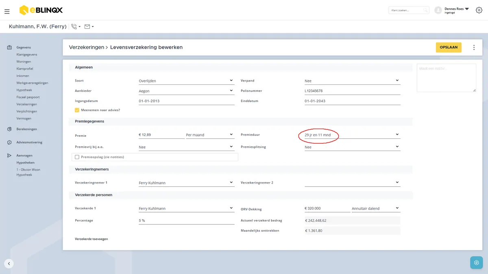
🔔 IT-24451: Nauwkeurige invoer premieduur bestaande ORV in PortefeuilleSignalen
Vanaf vandaag is het mogelijk om de premieduur van een bestaande overlijdensrisicoverzekering (ORV) in maanden in te voeren in de database onder eBlinqx Hypotheekadvies.Tot nu toe kon je alleen een afgeronde looptijd in hele jaren registreren. Dit gaf in sommige gevallen een vertekend beeld van de werkelijke einddatum of leidde tot onnodige afrondingen. Je kunt nu dus bijvoorbeeld ook 11 jaar en 6 maanden (oftewel 138 maanden) registreren. Deze aanpassing zorgt voor een preciezere signalering en betere aansluiting op de werkelijke polisgegevens van de klant.
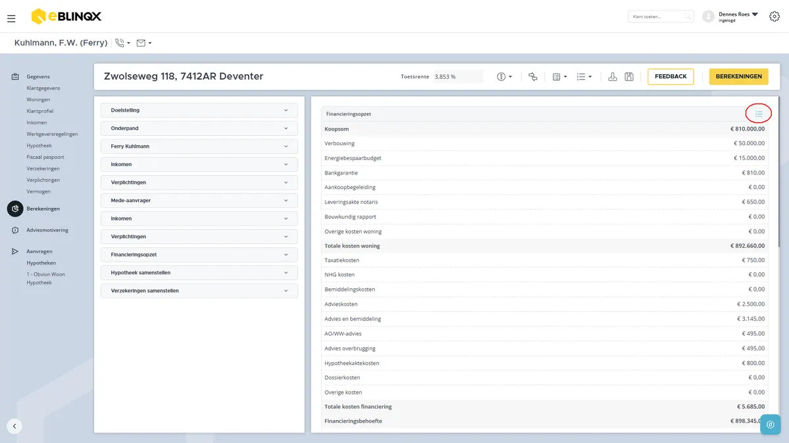
🔔 IT-26253: Nieuwe toggle voor weergavevorm financieringsopzet (1 of 2 kolommen)
We hebben we de gebruikerservaring van de financieringsopzet verder verbeterd. Vanaf vandaag is het mogelijk om de weergave van de financieringsopzet op het scherm zelf aan te passen. Er is een toggle toegevoegd waarmee je eenvoudig kunt wisselen tussen:
-
de standaardweergave in twee kolommen, en
-
een alternatieve weergave in één kolom, waarin alle posten overzichtelijk onder elkaar worden getoond.
De toggle is geplaatst op een intuïtieve locatie rechtsboven in het financieringsopzetblok.
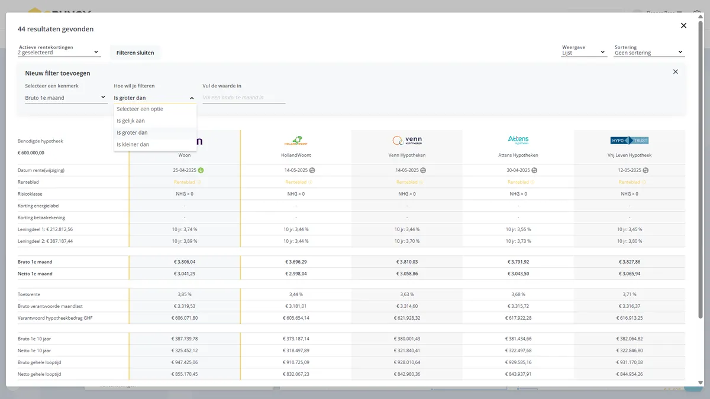
🔔 IT-26252: Geavanceerd filteren op de kwantitatieve vergelijking van geldverstrekkers
Met deze release is het mogelijk om binnen eBlinqx Hypotheekadvies geavanceerd te filteren en sorteren op de kwantitatieve vergelijking van geldverstrekkers. Deze functionaliteit helpt adviseurs sneller en doelgerichter de meest passende geldverstrekker(s) te selecteren.
Wat is er nieuw?
-
✅ Filters toegevoegd op basis van relevante criteria binnen de kwantitatieve vergelijking
-
✅ Sortering gefixt: werkt nu correct op oplopende en aflopende waarde
-
✅ Weergavemodus verbeterd: duidelijker onderscheid tussen lijstopbouw en detailweergave
-
✅ Filter ‘Aanbieder’ standaard verborgen om focus te houden op inhoudelijke verschillen
-
✅ Filters zijn klikbaar én direct aanpasbaar zonder de pagina te verversen
-
✅ Resultaatoverzicht verbeterd: toont nu bijv. “8 van 60 resultaten” in plaats van alleen “8 resultaten”
Voordelen voor jou als adviseur:
-
Snel de meest geschikte geldverstrekkers vinden op basis van objectieve data
-
Efficiënt filteren zonder onnodige stappen
-
Gebruiksvriendelijker en intuïtiever vergelijkingsoverzicht
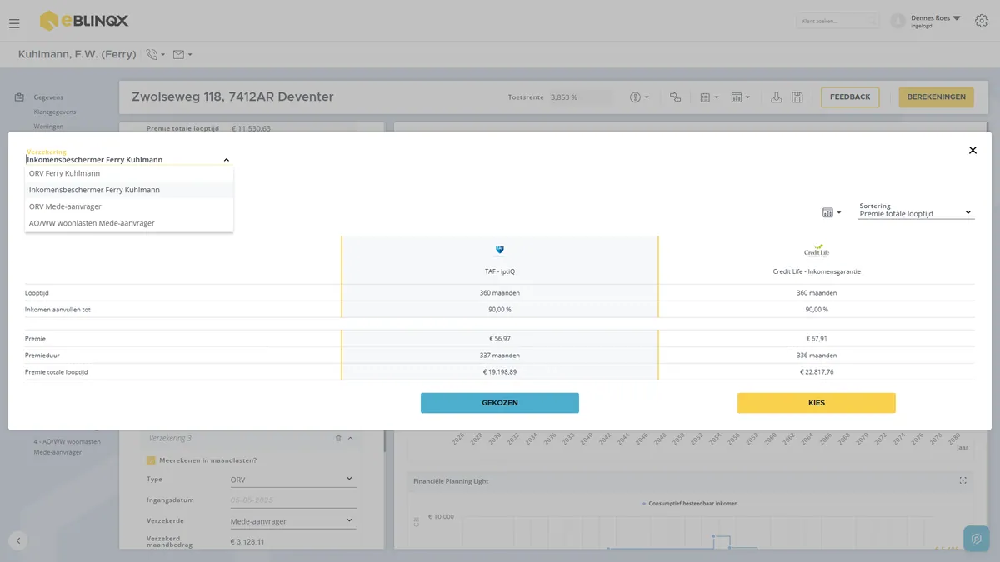
🔔 IT-26224: Inkomensbeschermers vergelijken
Het is nu is mogelijk om inkomensbeschermers van verschillende aanbieders met elkaar te vergelijken binnen eBlinqx Hypotheekadvies. Nu zowel het product van TAF als dat van Credit Life beschikbaar is, bieden we dezelfde vergelijkfunctionaliteit aan als bij woonlastenbeschermers. Wat is er nieuw?
-
Toevoeging van een vergelijkingslink met de tekst: ‘Vergelijk inkomensbeschermers’
-
Deze link opent een overzicht waarin de relevante producten naast elkaar worden gezet
-
Hiermee kun je eenvoudiger onderbouwd advies geven over inkomensbescherming
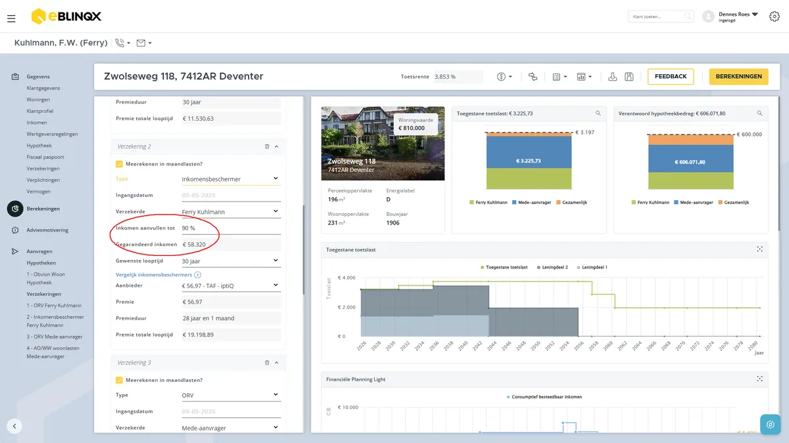
🔔 IT-26222: Standaard prefill bij inkomensbeschermers: ‘Inkomen aanvullen tot 90%’
Vanaf deze release wordt bij het samenstellen van een inkomensbeschermer de doelstelling ‘Inkomen aanvullen tot’ standaard ingevuld met 90% van het inkomen. Deze aanpassing zorgt voor tijdswinst en consistentie in adviesdossiers. De meeste inkomensbeschermingsadviezen richten zich op het aanvullen tot 90% van het laatstverdiende inkomen — deze voorkeursinstelling sluit aan bij de adviespraktijk van de meeste gebruikers. Wat betekent dit voor jou als adviseur?: Bij het toevoegen van een inkomensbeschermer wordt automatisch ‘90%’ ingevuld bij ‘Inkomen aanvullen tot’. Uiteraard blijft het mogelijk om dit percentage handmatig aan te passen indien gewenst.
🔔 IT-26299: UI-aanpassing verplichte teksten in adviesrapportweergave
We hebbeneen visuele verbetering doorgevoerd in de weergave van verplichte en optionele teksten in het adviesrapport. Deze wijziging betreft uitsluitend de gebruikersinterface en heeft geen invloed op de functionele werking of logica van het rapport. De wijzigingen zijn:
-
Verwijderen tooltip bij ‘Hofferen’
De overbodige tooltip is verwijderd om dubbele informatie te voorkomen. -
Aanpassing opmaak titel verplichte tekst
De onderlijning en vetgedrukte weergave zijn verwijderd. De tekst wordt nu standaard weergegeven, om verwarring met hyperlinks te voorkomen. -
Aanpassing label optionele teksten
Het label ‘Optie:’ is vervangen door het woord ‘Optioneel’ voor een duidelijkere en consistentere aanduiding.
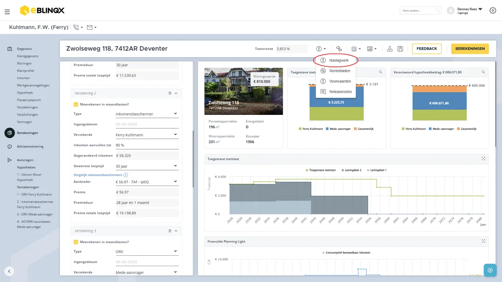
🔔 IT: 26277: SEH Adviespocket 2025 beschikbaar
De nieuwe editie van de SEH Adviespocket 2025 is vanaf nu beschikbaar. Dit compacte naslagwerk biedt een actueel overzicht van de belangrijkste fiscale en financiële wijzigingen voor 2025, speciaal samengesteld voor erkend hypotheekadviseurs en financieel planners. Hierin vind je relevante wijzigingen in wet- en regelgeving voor 2025 en praktische toelichtingen en voorbeelden voor de adviespraktijk
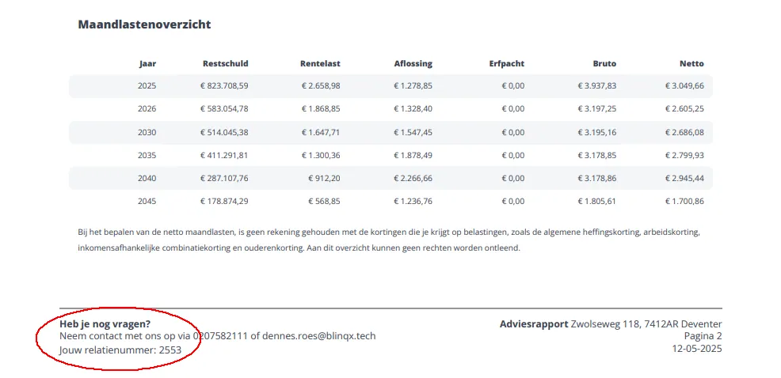
IT-25875: Relatienummer E-BLINQX / Elements nu zichtbaar in adviesrapport
Vanaf deze release wordt – indien beschikbaar – het relatienummer uit Elements automatisch toegevoegd aan het eBlinqx Hypotheekadvies Adviesrapport. Dit nummer wordt alleen getoond wanneer het in de database van eBlinqx Hypotheekadvies is opgeslagen. Indien het relatienummer niet bekend is, blijft deze regel achterwege.
Voordelen:
-
Zorgt voor eenvoudigere herleidbaarheid van dossiers tussen eBlinqx Hypotheekadvies en Elements.
-
Ondersteunt adviseurs en backoffice in het sneller koppelen van documenten aan klantdossiers.
-
Voorkomt verwarring en dubbele administratie doordat het relatienummer op één centrale plek zichtbaar is in de output.
Let op: er is geen actie vereist van de adviseur; de toevoeging gebeurt automatisch op basis van beschikbaarheid van gegevens.
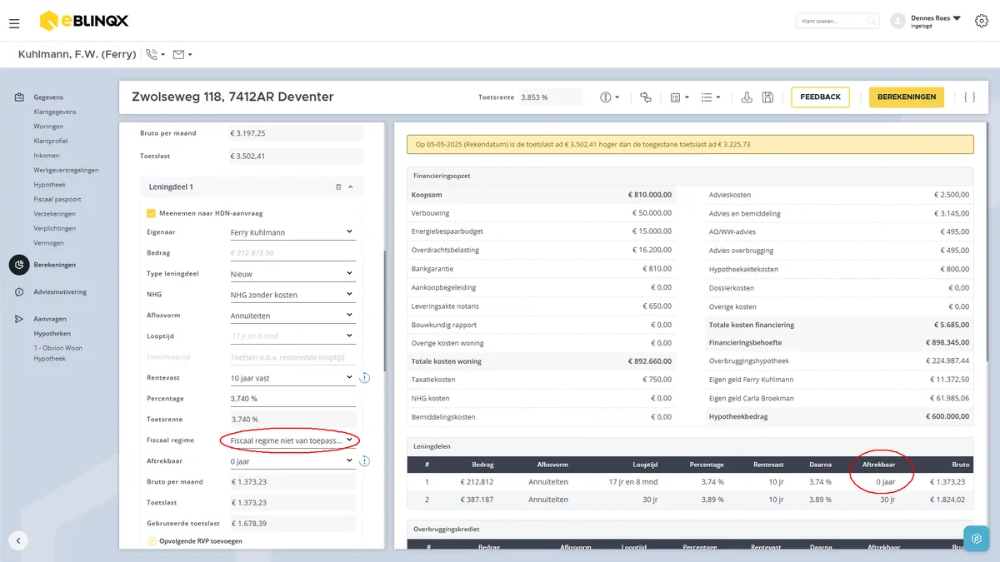
IT-26056: Fiscaal regime & aftrekbaarheid
Wanneer de adviseur bij een leningdeel kiest voor ‘Fiscaal regime niet van toepassing’, werd in de output onterecht een aftrekbaarheid van 30 jaar getoond, terwijl in de eBlinqx Hypotheekadvies-applicatie dit veld correct op 0 maanden stond en uitgegrijsd werd weergegeven. Dit is nu hersteld: de aftrekbaarheid wordt voortaan zowel in de interface als in de output correct en consistent weergegeven als 0 jaar.
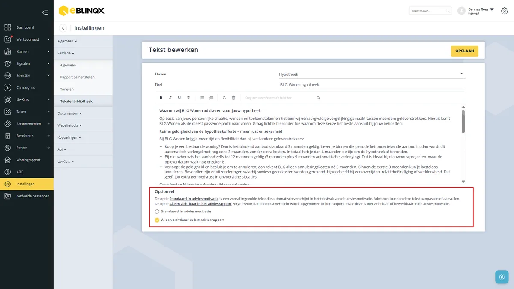
IT-25897: Verplichte teksten in het adviesrapport
Vanaf deze release is het mogelijk om in de tekstenbibliotheek een tekst aan te merken als ‘Alleen zichtbaar in het adviesrapport’ via een nieuwe checkbox.
-
De betreffende tekst wordt automatisch opgenomen in het adviesrapport bij het gekoppelde onderdeel.
-
Deze tekst wordt niet weergegeven in de adviesmotivering tijdens het adviesproces ('onderweg'), omdat de adviseur deze tekst niet kan bewerken of verwijderen.
Doel: Deze uitbreiding maakt het voor grotere organisaties mogelijk om verplichte standaardteksten uitsluitend in het eindrapport af te dwingen, ter bevordering van uniforme communicatie en compliance.
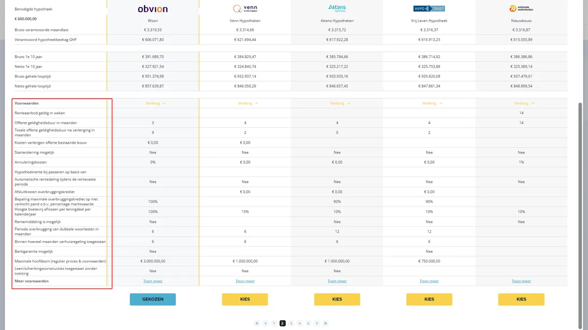
IT-26231: Uitbreiding voorwaardenoverzicht in eBlinqx Hypotheekadvies
In deze release hebben we het aantal getoonde voorwaarden binnen eBlinqx Hypotheekadvies uitgebreid. Deze uitbreiding vormt de basis voor toekomstige functionaliteiten zoals filteren op voorwaarden en het meenemen van voorwaarden in de vergelijking en berekeningen. Vanaf nu worden de volgende voorwaarden zichtbaar in het overzicht:
-
Renteaanbod geldig in weken
-
Offerte geldigheidsduur in maanden
-
Totale offertegeldigheidsduur na verlenging (in maanden)
-
Kosten voor verlengen offerte
-
Starterslening mogelijk
-
Annuleringskosten
-
Hypotheekrente bij passeren op basis van (offerterente of passeerrente)
-
Automatische rentedaling tijdens rentevaste periode (risicoklasse-aanpassing)
-
Afsluitkosten overbruggingskrediet
-
Bepaling maximale overbrugging op niet-verkocht pand (percentage marktwaarde)
-
Hoogte van boetevrij aflossen per leningdeel per kalenderjaar
-
Rentemiddeling mogelijk
-
Periode overbrugging dubbele woonlasten (in maanden)
-
Verhuisregeling toegestaan binnen (aantal maanden)
-
Bankgarantie mogelijk
-
Maximale hoofdsom
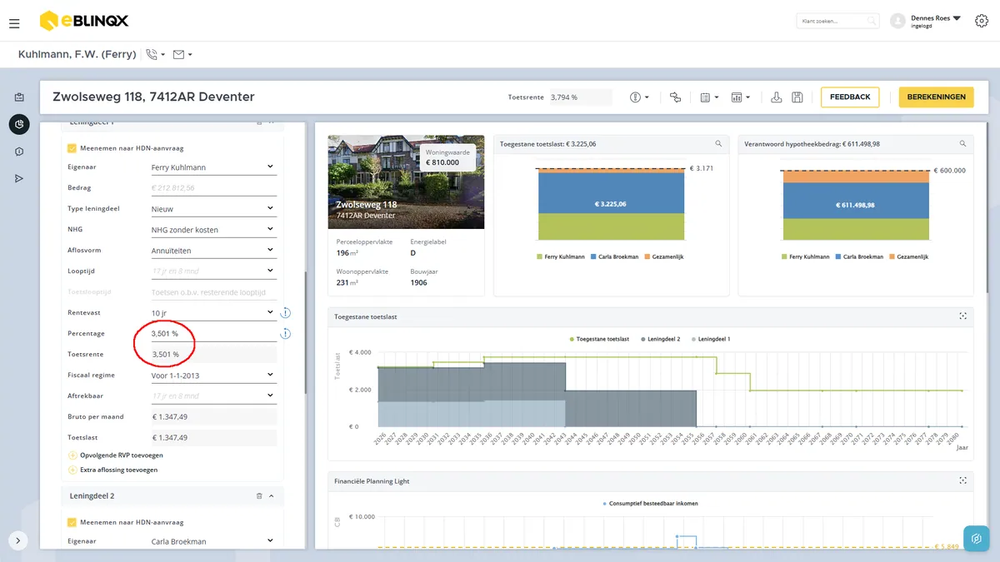
IT-26235: Ondersteuning voor rentepercentages met drie cijfers achter de komma
Vanaf deze release is het mogelijk om binnen eBlinqx Hypotheekadvies rentepercentages in te voeren tot op drie decimalen. Dit betekent dat je nu bijvoorbeeld een hypotheekrente van 3,501% kunt invoeren, in plaats van de eerder afgeronde 3,51%. Deze verfijning zorgt voor nog nauwkeurigere berekeningen van het verantwoord hypotheekbedrag, vooral in situaties waarin een klein renteverschil van invloed is op de maximale leencapaciteit.
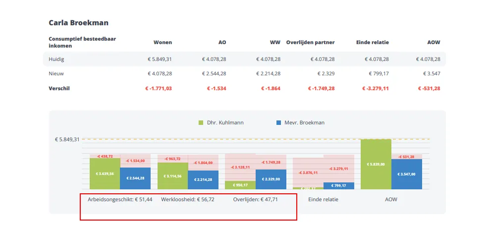
IT-25334: Heldere specificatie van ORV-premies bij ‘Verantwoord blijven wonen’
Vanaf deze release worden de premies van handmatig toegevoegde overlijdensrisicoverzekeringen (ORV) voor alleenstaanden afzonderlijk gespecificeerd in de eBlinqx Hypotheekadvies-uitdraai onder het thema ‘Verantwoord blijven wonen’. Waar eerder enkel het totale maandbedrag werd getoond, worden nu alle onderliggende ORV-premies inzichtelijk weergegeven. Deze verbetering zorgt voor meer transparantie richting de klant en biedt een betere onderbouwing van de totale maandlasten in het adviesrapport.
🎉 IT-24491: Nieuw in eBlinqx Hypotheekadvies: Credit Life Inkomensgarantie live
Vanaf vandaag is het product Credit Life Inkomensgarantie geïntegreerd in eBlinqx Hypotheekadvies! Dit innovatieve inkomensbeschermingsproduct van Credit Life is nu direct beschikbaar binnen de advies- en vergelijkingstools van eBlinqx Hypotheekadvies, zodat jij als adviseur klanten nog beter kunt ondersteunen bij inkomensonzekerheid. De Credit Life Inkomensgarantie biedt financiële bescherming bij werkloosheid of arbeidsongeschiktheid en is bedoeld om de maandlasten van de hypotheek (gedeeltelijk) op te vangen. Dit draagt bij aan een verantwoorde woonlast en vergroot de financiële rust van jouw klant, juist in onvoorziene situaties.
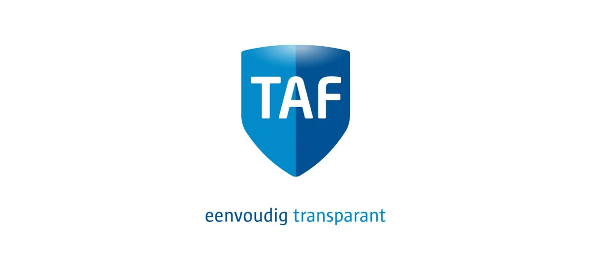
🚀 Nieuw in eBlinqx Hypotheekadvies: TAF Inkomensbeschermer nu beschikbaar
Met trots kondigen we aan dat de TAF Inkomensbeschermer voor werknemers vanaf vandaag live staat in eBlinqx Hypotheekadvies! Dit AOV-product van TAF is speciaal ontwikkeld voor werknemers en biedt inkomensbescherming bij langdurige arbeidsongeschiktheid. De TAF Inkomensbeschermer sluit perfect aan op het thema Verantwoord blijven wonen binnen het adviestraject. Als adviseur kun je nu eenvoudig inzicht geven in de premie, dekking en toegevoegde waarde van dit product – volledig geïntegreerd in de eBlinqx Hypotheekadvies-verzekeringsvergelijker en adviesrapportage.
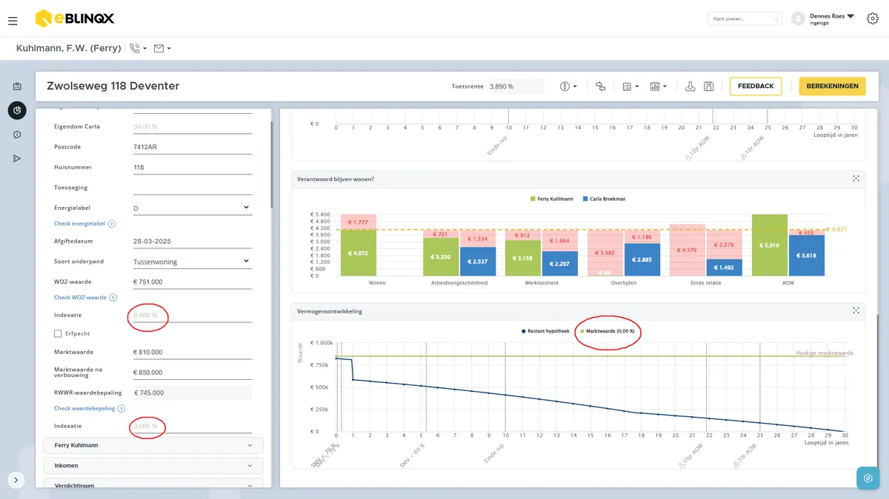
IT-23401: Standaard indexatie marktwaarde en WOZ-waarde
Vanaf deze release wordt de ingestelde standaardindexatie van de marktwaarde en WOZ-waarde correct overgenomen in de berekening én zichtbaar weergegeven in zowel de sidebar als de output. Voorheen werd, ondanks een standaardinstelling van 0%, ten onrechte 2% weergegeven in de sidebar en in de vermogensgrafiek, terwijl dit niet altijd overeenkwam met de daadwerkelijke berekening. Dit leidde tot verwarring bij gebruikers. De volgende onderdelen zijn aangepast:
-
De standaardinstelling voor indexatie (bijv. 0%) wordt nu consequent toegepast in alle berekeningen;
-
In de sidebar en vermogensgrafiek wordt het juiste percentage weergegeven, overeenkomstig met wat daadwerkelijk is ingesteld en berekend;
-
Ook in de output en het adviesrapport is de weergegeven indexatie in lijn gebracht met de gekozen instellingen en berekeningsuitkomsten.
Deze verbetering zorgt voor meer transparantie en voorkomt onbedoelde afwijkingen tussen instellingen, weergave en berekening.